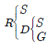
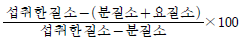
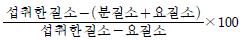
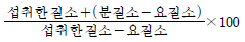
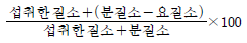
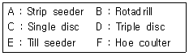
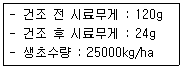
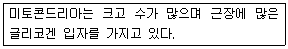

1과목: 가축육종학
1. 대립유전자(對立遺傳子)의 상호작용에 의한 효과는?
2. 산란지수(hen housed production)를 옳게 설명한 것은?
3. 육우의 모색 유전자 적색과 백색 유전자가 대립관계에 있을 때 2천두에 대한 모색을 조사한 결과 적색(red) 720두, 조모색(roan) 960두 및 백색(white) 320두가 조사되었다. 이때 적색 유전자의 빈도는 얼마인가?
4. 젖소의 후대 검정용 후보 씨 수송아지를 생산하기 위한 씨암소의 자격 요건에 포함되는 것은?(오류 신고가 접수된 문제입니다. 반드시 정답과 해설을 확인하시기 바랍니다.)
5. 대립유전자간의 상호작용에 의하여 이형접합체의 개체가 동형접합체의 개체보다 성적이 우수한 현상을 무엇이라고 하는가?
6. 어느 고깃소군의 1일 평균 증체량이 1kg이고, 육종의 목적으로 사용된 군은 평균 증체량이 1.25kg이라고 할 때 선발차는?
7. 어떤 개체의 유전자형을 알기 위하여 열성의 호모개체를 교잡하는 검정교배(Test cross)를 나타낸 것은?
8. 가축의 유전적 개량에 미치는 요인이 아닌 것은?
9. 다음 가계도에서 R의 근교계수는?

10. 후대검정은 어떠한 경우에 가장 효과적으로 이용할 수 있는가?
11. 가축에서 치사 유전자 작용에 의하여 발현되는 형질이 아닌 것은?
12. 환경 변이가 없는 조건에서 사육한 돼지의 165일령 체중이 다음과 같다고 할 때 이형 접합체의 유전자형가는? (단, AA : 120kg, Aa : 110kg, aa : 90kg)
13. 고깃소에서 교잡종 생산을 위한 품종 선택 시 고려해야할 사항이 아닌 것은?
14. 유량에 있어 특정 집단의 선발차가 2000kg이고 이들 개체들의 세대간격이 수컷이 4년, 암컷이 6년이라 할 때 연간 유전적 개량량은?
15. 일반적으로 유전력이 높은 형질 개량을 위해서는 어떤 선발방법이 효과적인가?
16. 돼지의 개량목표로 바람직하지 않은 것은?
17. 돼지 요크샤종(WW)과 버크샤종(ww)을 교배하여 F1을 얻고 다시 F1끼리 교배시켰을 때 F2에서 형성되는 유전자형과 이들의 구성비는?
18. 가축의 양적형질이 아닌 것은?
19. 하디-와인버그(Hardy-Weinberg)법칙에 대한 설명으로 틀린 것은?
20. 젖소의 산유능력을 측정할 때 규정된 표준 비유기간은?
2과목: 가축번식생리학
21. 다음 중 소, 돼지의 임신을 확인하기 위해여 실시하는 임신진단법으로 가장 거리가 먼 것은?
22. 임신기에 있는 포유가축의 유방의 유선관계와 유선포계의 발달을 촉진시키는 호르몬들을 올바르게 연결한 것은?
23. 번식장애와 관련된 설명으로 옳은 것은?
24. 정자가 수정능력 획득에 의하여 정자두부에서 방출되는 효소 중 난자의 투명대를 용해하는 효소는?
25. 성숙한 젖소에서 인공수정하기 위한 최적의 정액주입시기, 즉 교배적기는 언제인가?
26. 설치류 동물의 황체를 유지하는 호르몬은?
27. 성숙한 가축에서 채취한 직후 신선한 정액의 평균 pH값으로 가장 적합한 것은?
28. 정상적인 가축에서 수정란의 착상이 일어나는 장소는?
29. 소에서 배반포기에 도달한 수정란을 이식하기에 적합한 시기는? (단, 수란우 발정 후를 기준으로 한다.)
30. 한우의 평균 임신기간은?
31. 수정란 이식에 관한 설명으로 옳지 않은 것은?
32. 돼지의 경우 발정동기화를 하면 얻어지는 이로운 점이 아닌 것은?
33. 화학적 구조에 따른 호르몬의 분류 중 스테로이드계에 해당되는 것은?
34. 다음 중 시상하부에서 주로 분비되는 호르몬은?
35. 태아의 만출 후부터 태반이 정상적으로 만출 될 때까지의 시간을 가축별로 바르게 연결된 것은?
36. 난소의 황체에서 주로 분비되는 호르몬은?
37. 다음 중 소에서 분만 후 자궁이 비임신 상태의 크기로 환원되는 자궁퇴축이 완료되는 시기는?
38. 다음 중 가축의 평균 임신기간을 바르게 나타낸 것은?
39. 가축의 번식계절에 영향을 미치는 요인으로 가장 거리가 먼 것은?
40. 다음 중 발정과 관련된 설명으로 옳지 않은 것은?
3과목: 가축사양학
41. 위생적인 착유 순서로서 가장 올바른 것은?
42. 다음 미생물 중 전분을 분해 이용하는 반추미생물이 아닌 것은?
43. 가축은 섭취한 사료 중 탄수화물의 소화를 용이하게 하기위해서 다양한 종류의 탄수화물 소화효소를 분비하는데 다음 중 말타아제(maltase)는 말토오스(maltose)을 분해시키는 효소로 최종 분해 산물은?
44. 자돈 전용사료인 입질사료(Prestarter)의 가장 중요한 주원료 사료는?
45. 닭에 있어서 사료 내 첨가하는 항지방간 인자에 해당되지 않는 것은?
46. 유기비소제는 콕시듐병 예방제로 사용되고 성장촉진 효과가 있는 것으로 밝혀지고 있다. 유기비소제가 가축의 성장을 촉진시키는 기전 중 틀린 것은?
47. 부화 중 제 2회 검란시의 관찰 상태가 아닌 것은?
48. 다음 중 단백질의 질을 측정하는 방법으로 성장을 위한 생물가(biological value)를 산출하는 공식으로 맞는 것은?




49. 갓 태어난 젖소 송아지에게 초유는 언제 급여하는 것이 옳은가?
50. 당류가 포도당으로 변화되어 사용되는 것을 설명한 것중 옳지 않은 것은?
51. 다음 중 사료 원료(原料)의 품질관리를 위한 이화학적(理化學的) 방법에 해당하는 것은?
52. 계사내의 습기제거는 쾌적한 환경을 통한 닭의 생산력 향상에 매우 중요하다. 다음의 계사 내 습기제거 원리에 관한 설명 중 틀리거나 관계없는 것은?
53. 점감점증법은 산란계의 산란율을 증가시키기 위해 최대 얼마까지의 점등시간을 연장해 점등 관리를 하는가? (단, 초산이 시작되는 20주령 이후부터로 한다.)
54. 옥수수와 대두박 위주의 산란계 사료에서 제 1 제한아미노산은 무엇인가?
55. 조사료 분석을 위한 van Soest 방법 중 ADF(aciddetergent fiber)의 주성분이 아닌 것은?
56. 최소가격배합표(least cost formula) 작성에 필요한 자료로써 필수적인 것이 아닌 것은?
57. 반추동물인 소는 제1위내 미생물에 의하여 특유한 영양 작용을 한다. 다음 중 장내 미생물이 영위하는 영양작용과 관계가 있는 것은?
58. 담즙산염(bile salt)의 기능이 아닌 것은?
59. 다음 중 지용성(脂溶性) 비타민에 해당하지 않는 것은?
60. 축산 선진국에서는 각기 고유의 가축사양표준을 가지고 있다. 우리나라의 '한국사양표준'이 주요 축종별로 처음으로 제정된 연도는?
4과목: 사료작물학 및 초지학
61. 콩과목초인 라디노 클로버(Ladino clover)가 속한 종의 학명은?
62. 다음 중 우리나라 남부지방의 답리작에 알맞으며, 특히 기호성과 수량이 높은 사료 작물은?
63. 벼과(화본과) 목초의 생육시기와 수량 및 영양성분과의 관계 중 생육시기가 진행됨에 따라 증가하는 것으로만 구성된 것은?
64. 주로 가뭄이 지속되는 해 5~6월경 옥수수를 비롯한 벼과(화본과) 목초에 큰 피해를 줄 수 있는 해충은?
65. 경운초지 조성 방법의 장점이 아닌 것은?
66. 생육 중에 있는 어린 수단그라스계 잡종을 청예(靑刈)나 방목용으로 이용할 때 가장 문제가 되는 것은?
67. 사초는 생존년한에 따라 다년생, 2년생, 월년생, 1년생으로 구분한다. 다음 중 다년생 콩과(荳科) 목초는?
68. 태양열을 이용하며 공기의 유통을 좋게 하는 건초 조제 방법으로 천일건조법이라고 하는 것은?
69. 사료작물의 건초제조에 알맞은 시기가 부적합한 것은?
70. 방목지에서 가축의 목양력을 계산할 때 가축단위 방목일의 단위가 있다. 10ha에 착유우 젖소(약 500kg) 20두를 30일간 방목할 때 가축단위 방목일(LUGD)은 얼마인가?
71. 중부지방의 작부체계에 관한 설명 중 가장 바르게 설명한 것은?
72. 초지조성 시 산성 토양의 산도교정을 위해 주로 사용하는 토양 개량제 성분은?
73. 방목지 3ha에 500kg의 착유우 12두와 300kg의 육성우 10두를 방목시키면 이 목구의 방목밀도(放牧密度)는?
74. 다음 중 낙농가에서 청예용으로 가장 많이 이용하는 사료작물은?
75. 불경운초지 개량 시 파종방법에 따른 목초의 정착과 관련하여 가장 좋은 것부터 순서대로 나열된 것은?

76. 콩과(荳科) 사료 작물의 형태적 특징으로 옳은 것은?
77. 다음 중 사일리지용 옥수수의 적절한 절단 길이는?
78. 초지는 방목 후 청소베기를 해주는 것이 좋다. 다음 중 청소베기 효과와 거리가 먼 것은?
79. 사료작물의 기상 생태학적 분류에서 난지형 작물로만 짝지어진 것은?
80. 다음 [보기]의 조건으로 계산한 목초의 건물수량(kg/ha)은?

5과목: 축산경영학 및 축산물가공학
81. 조수입이 5000만원, 변동비가 2500만원, 고정비가 1500만원일 때 손익분기점은 얼마인가?
82. 축산경영에서 생산계획 수립 시 고려해야 할 사항이 아닌 것은?
83. 축산경영에 있어서 생산규모가 증가함에 따라 고정비는 어떻게 변하는가?
84. 비육우의 두당 생산비가 100만원, 순수익이 200만원, 소득이 60만원일 때 소득률은?
85. 다음생산요소 중 고정자본재가 아닌 것은?
86. 고정자본재에 대한 정상적인 감가원인으로 옳지 않은 것은?
87. 쇠고기의 소매단계 판매에서 의무적으로 등급표시를 해야 하는 부위가 아닌 것은?
88. 비용함수에서 사용되는 비용에 대한 내용으로 옳지 않은 것은?
89. 노동 효율을 향상시키기 위한 방법으로 옳지 않은 것은?
90. 축산경영 분석을 위한 대차대조표에 대한 설명으로 옳은 것은?
91. 다음 중 근육의 미세구조와 그 설명이 가장 적절하지 않은 것은?
92. 유지방 함량이 30~40%인 크림은?
93. 젖산균 발효에 의해 pH를 저하시켜 가열처리한 후, 단기간의 건조로 수분 함량이 50% 전후가 되도록 만든 소시지에 해당하는 것은?
94. 다음 중 염지의 효과로 가장 거리가 먼 것은?
95. 시유의 처리공정의 순서로 옳은 것은?
96. 식육에 존재하는 수분에 관한 설명으로 가장 적합하지 않은 것은?
97. 식육의 식중독 미생물 오염방지를 위한 대책으로 적합하지 않은 것은?
98. 다음 중 Blue cheese의 제조 시 첨가하는 것은?
99. 근육의 수축 기작이 일어나는 기본적인 단위는?
100. 다음 설명에 해당하는 근육은?
